|
CONSTRUCCIÓN DE CASETA INVERNAL PARA
Geochelone Sulcata
Franjo Cervera, 2007
Decidí remodelar la caseta de mis
sulcatas. La inicial era una caseta muy casera hecha de madera de
aproximadamente 1m3, pero muy bien calefactada pues al ser un espacio
reducido y bien aislado se calentaba enseguida. Tuve dudas sobre si
comprarme una caseta de madera prefabricada o por el contrario hacerla
de obra. Había pros y contras a las dos opciones y al final opté por
la de obra por tener un mantenimiento nulo respecto a la de madera,
además de quedar mejor integrada en mi jardín. Pongo dos fotos de la
antigua caseta. Como veréis más adelante, estaba en el mismo sitio que
la que ahora he construido. Por si a alguien le interesa, está
construida con paneles de encofrar dobles y en medio de los dos, una
placa de porexpan para aislar. El tejado con láminas de madera y dos
piezas superpuestas de onduline. Pese a tormentas y demás nunca entró
agua.
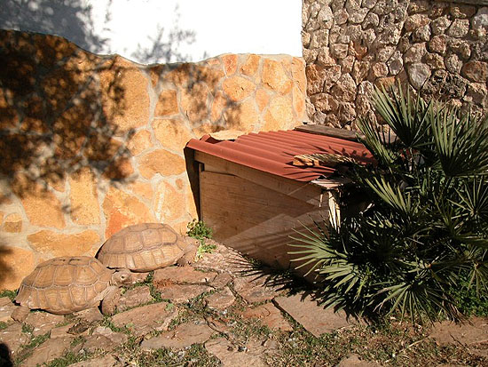
Parte exterior de la antigua caseta.
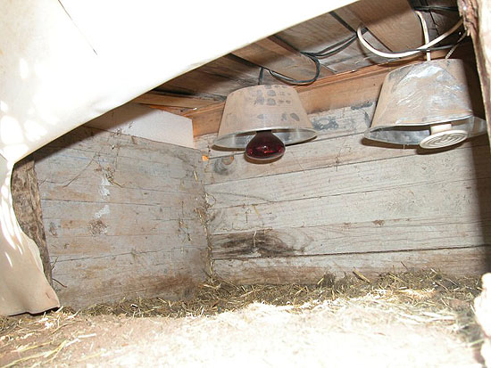
Interior de la antigua caseta
(bombilla infrarroja 150 W y lámpara de
calor de 100W)
Cuando te planteas hacer una casa para
tortugas de este tamaño lo primero que piensas es en que se pueda
calentar con facilidad. También piensas que sea una construcción
resistente y duradera por razones evidentes y por último que sea
funcional para poder entrar y limpiar bien las instalaciones.
La anterior caseta sólo tenía una de las tres, que era caliente, pero
no era muy resistente ni tampoco funcional. Para ver los animales me
tenía que agachar y era un incordio. Mientras los animales eran de un
tamaño pequeño fue perfecta, pero los animales de 18-20
Kg. con un golpe podían dañarla o desmantelarla.
La que he construido se calienta bastante bien y lo que es mejor, no
pierde mucha temperatura. Un punto a tener en cuenta es la
orientación; mi caseta está orientada al suroeste, no podía ponerla al
sureste que es más cálido, pero le
da bastante sol.
Un
tema importante a tener en cuenta es que no se deben poner cristales
convencionales simples o de climalit, ni
metacrilato, ya que dichos materiales no
dejan pasar los rayos UV, tan beneficiosos para las tortugas.
En cambio, el
policarbonato sí que los deja pasar y esos son los que tienen
las ventanas de la caseta. Llo venden en Leroy
Merlín y supongo que en muchos sitios más. Las ventanas mías tienen
dos paneles cada una de 4mm, en total les da un grosor de 8mm.
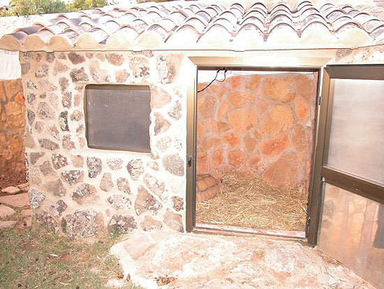
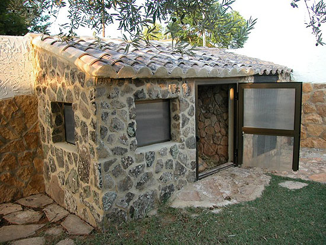
El tema de la calefacción yo lo he
solventado con una lámpara de infrarrojos de 150 w y una lámpara
cerámica de 200w. Ambas están conectadas a un termostato de calor y
pueden estar encendidas día y noche pues la de infrarrojos no les
molesta en absoluto para dormir. Las lámparas están cubiertas por unas
mamparas/pantallas de la marca “Exoterra”
exactamente en la caja pone “ Glow-Light,
Porcelain Clamp Lamp
+ Glow (reflector)”. Usan casquillo de
cerámica y tienen dentro un revestimiento cerámico que
reflecta el calor y la luz durante. He tenido dudas respecto de
colocar alguna fuente de luz que les proporcione
UV tipo una
Power, pero finalmente he optado por no
poner nada. Estos animales, incluso en invierno salen a comer si hace
sol y aprovechan para solearse, con lo cual este tema está solventado.
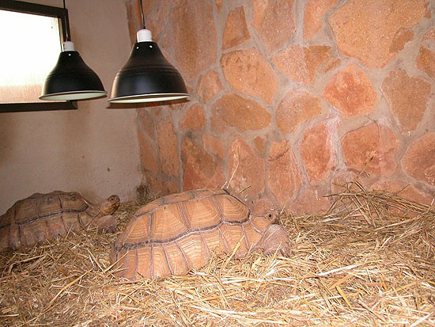
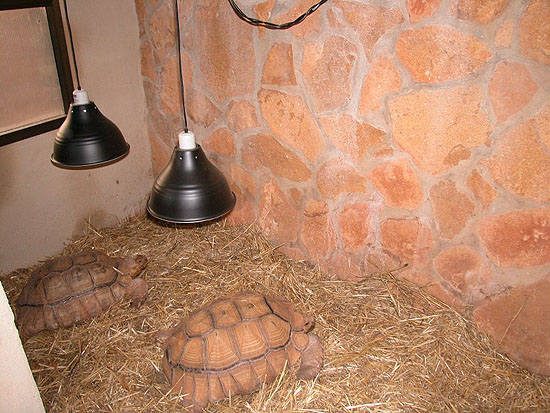
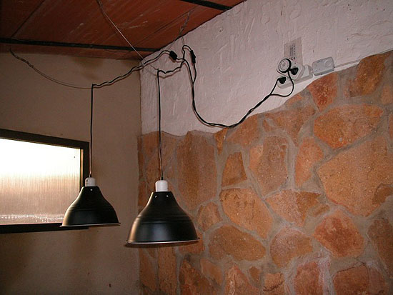
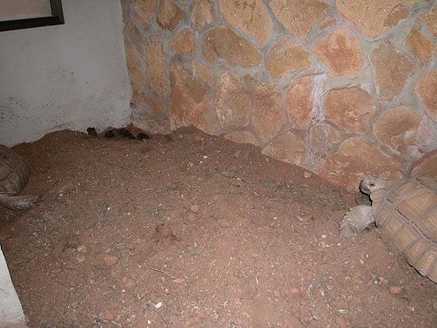
Un tema al que le
di vueltas era la entrada a la caseta y esto lo he solucionado
con esa puerta con acceso para las tortugas aun estando cerrada, y que
yo puedo abrir para acceder. Las tiras son de las que se utilizan en
las cámaras frigoríficas y son bastante aislantes. Un tema importante
es que al colocarlas se solapen entre ellas un mínimo de 2cm con el
objeto de dejar pasar el menor aire posible.
Por último, la construcción decidí hacerla con bloques de
termoarcilla que son los que se ven en las fotos. Esta especie
de ladrillos son especialmente indicados por su capacidad de aislante
térmico, ya que en su interior tienen muchas celdillas que
actúan de cámara. Las medidas de la caseta aproximadamente son
de 2.20 m de larga por 1.50 m de ancha, la altura es de unos 2 m en la
parte alta y de 1.50 m en la baja. Hay que entrar un poco agachado
pero dentro puedes manejarte bien. Esto de poder entrar en la caseta
es un tema muy importante en estos animales grandes, sobre todo en
invierno, que pueden pasar días sin salir y es necesario entrar para
limpiarla, supervisarla, etc.
Distintas fotos del proceso de construcción:
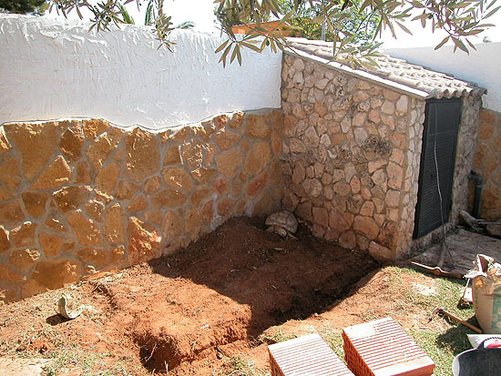
Como curiosidad, se
puede ver a la tortuga en el sitio exacto donde estaba su antigua casa
después de desmontarla.
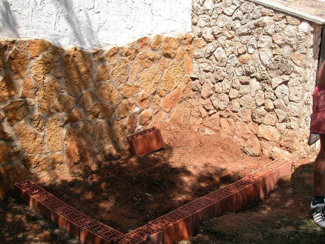
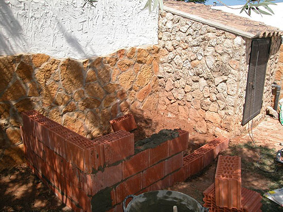
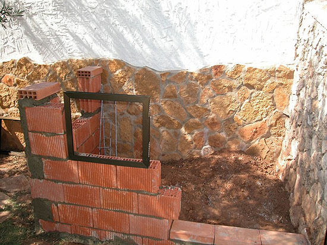
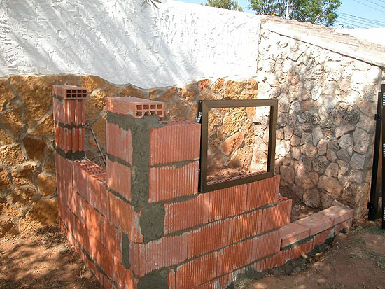
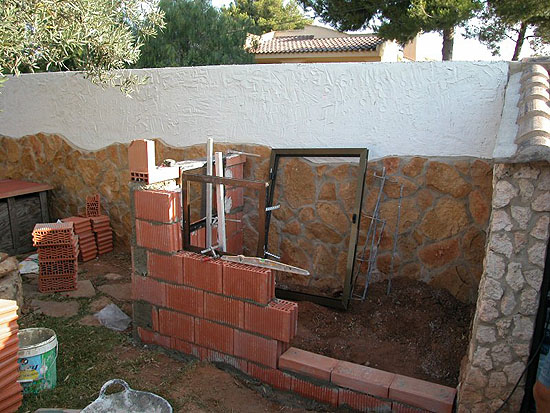
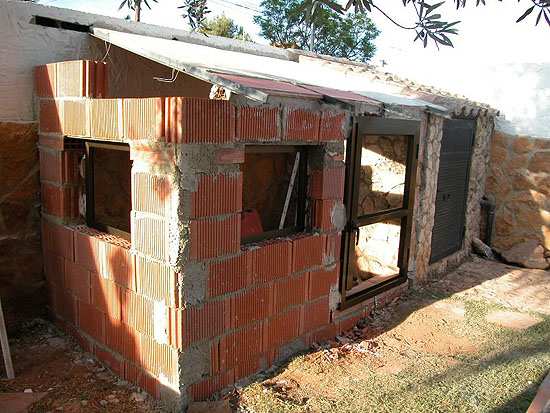
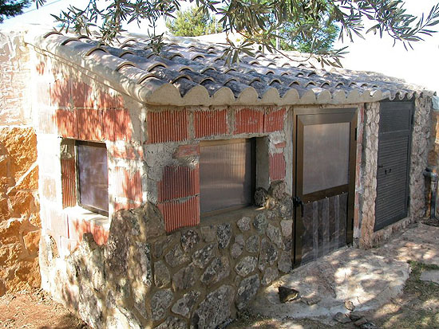
Este ha sido el resultado final, como
veis la he forrado de piedra natural que todavía
aísla más. La rampa también es de piedra y por bajo de la misma
he puesto un desagüe para canalizar el agua y que no tengan humedad.
La parte trasera es un muro de piedra y el lateral una depuradora
forrada de piedra también.
Ellas cuando salen tienen
una parcela de casi 1000 m2 para ellas, el recinto está vallado por si
algún día me interesa que no salgan, pero normalmente la puerta está
abierta, he puesto varias fotos del conjunto.
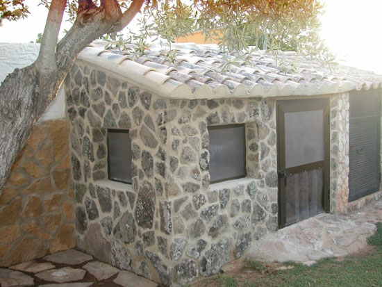
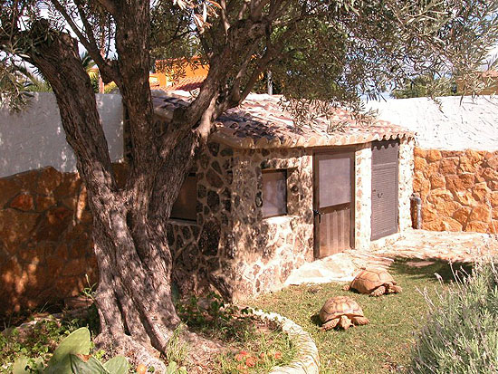
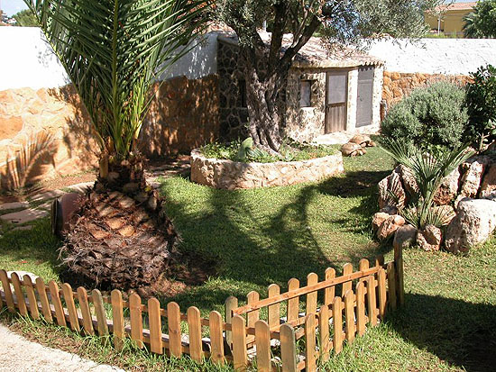
Espero que os haya servido para
coger ideas. Saludos a todos los del foro.
|